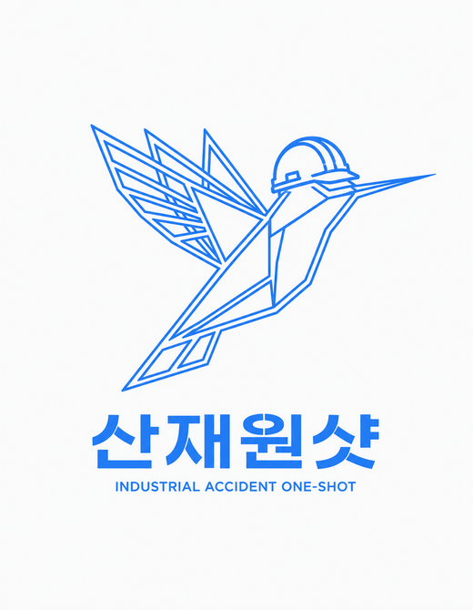
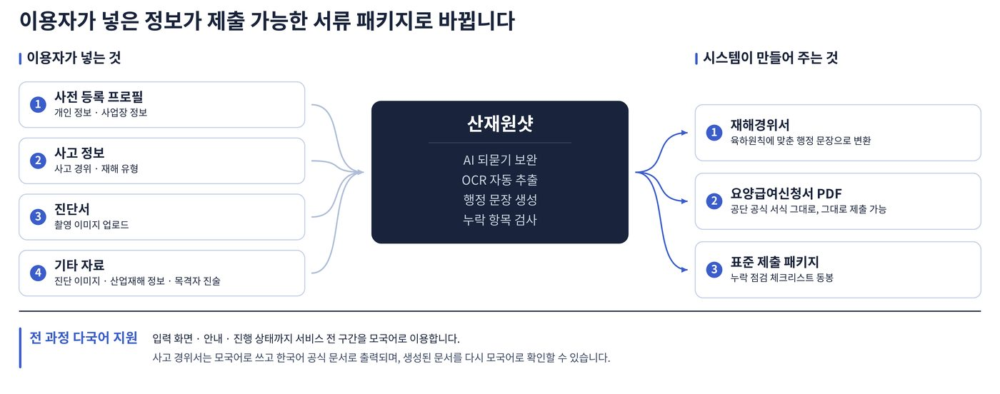
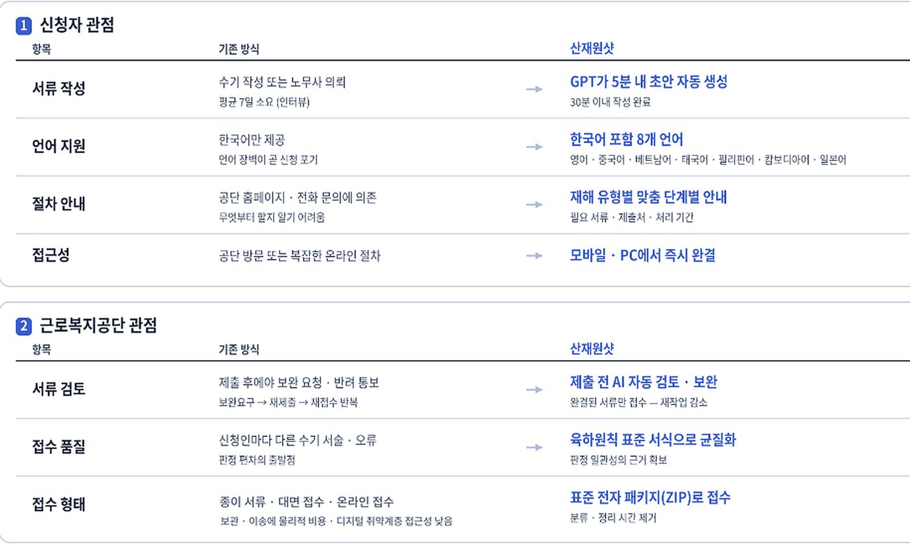
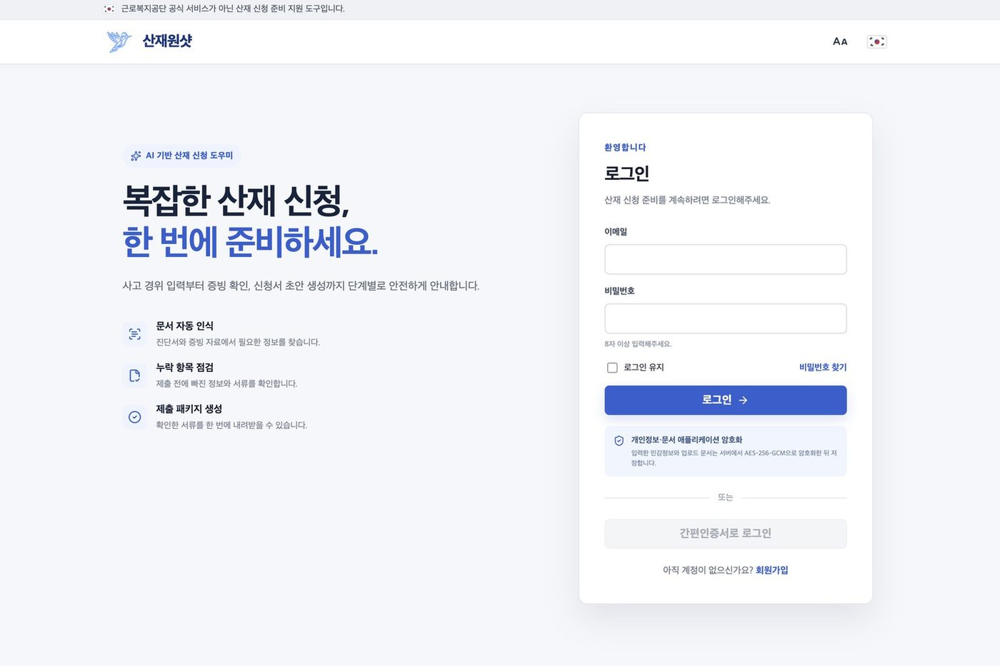
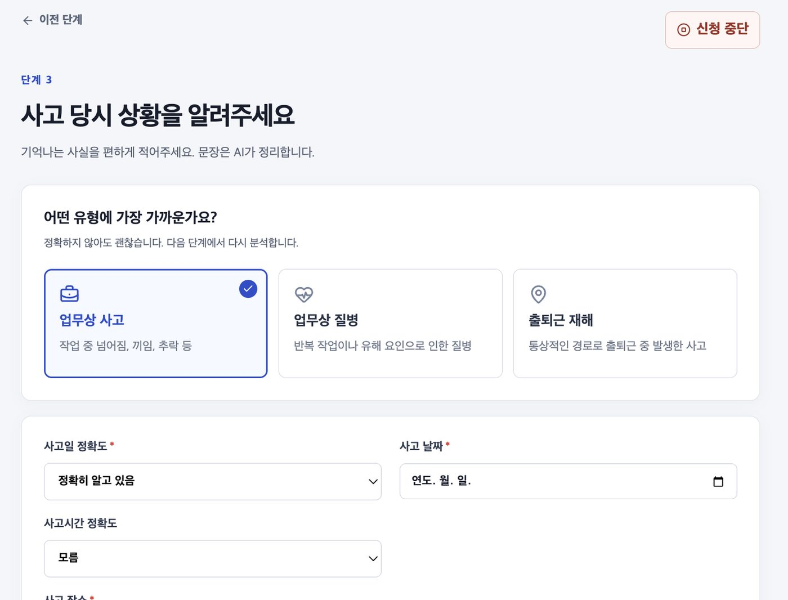
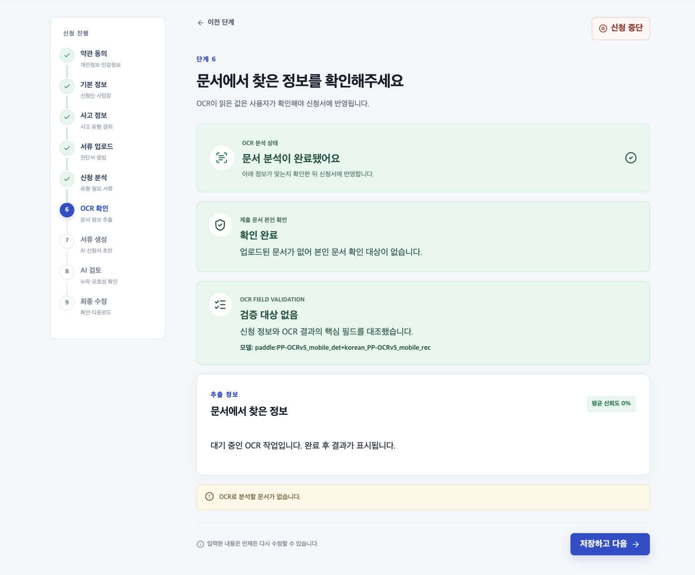
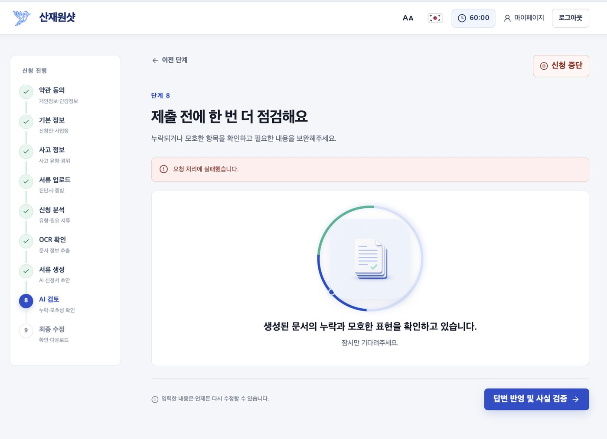
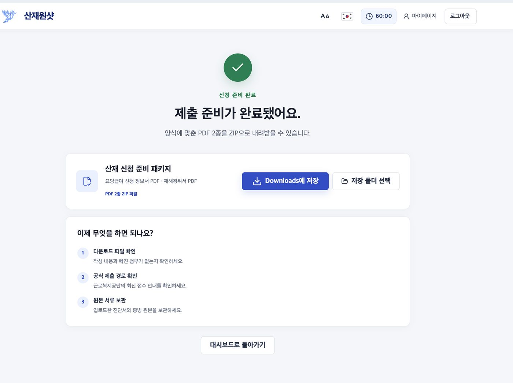

다친 노동자가 전문 지식이나 서류 작성 경험 없이도 모국어로 30분 안에 산재 신청 서류를 완성하도록 돕는 AI 웹 서비스입니다. 5인 팀의 팀장·PM으로 기획 총괄부터 데이터 설계, 사업모델, 본선 발표까지 맡았습니다.

자유과제 부문 · 본선 20팀 중 최우수상 2팀 · 2026.09.04 시상 · 주최 고용노동부 · 주관 한국기술교육대학교 직업능력심사평가원
산재 신청 건수는 5년 새 절반 가까이 늘었지만, 신청은 여전히 요양급여신청서·재해경위서·초진소견서 등 최소 5종의 서류를 노동자가 직접 준비해야 합니다. 서류가 어려워 노무사 대행(평균 55만 원)에 의존하거나 신청 자체를 포기하는 사람이 많고, 특히 외국인 노동자와 고령 노동자가 이 벽에 가장 취약합니다.
어떤 서류가 필요한지 판단하는 것부터 노동자의 몫. 요양급여신청서 하나에만 약 35개 항목을 써야 하고, 재해 유형에 따라 서류가 최대 14종까지 늘어납니다.
수기 작성 서류의 누락·오기·모호한 표현이 보완요구→재제출→재접수를 반복시키고, 그 부담은 근로복지공단 담당자가 떠안습니다.
정부의 K-산재보험 4.0은 접수 이후 심사 단계에 초점이 맞춰져 있어, 서류를 만들고 모으는 신청 단계는 여전히 개인 역량에 맡겨져 있습니다.
이용자는 사고 경위만 모국어로 서술하고, 나머지는 시스템이 채웁니다. AI가 빠진 요소를 되묻고, OCR이 진단서를 읽고, 공단 공식 서식 그대로 요양급여신청서와 재해경위서를 생성한 뒤 제출 전 누락까지 검증합니다. 설계 원칙은 “결정적 로직은 코드로, 판단이 필요한 부분만 AI로”였습니다.
8개 언어 중 모국어를 고르면 전 구간이 전환되고, 유형별 필요 서류와 준비 순서가 안내됩니다.
편하게 적은 서술에서 빠진 요소(시각·작업 내용·목격자)를 AI가 되물어 채웁니다.
촬영한 진단서에서 상병명·의료기관을 추출해 원본과 나란히 대조합니다.
육하원칙 재해경위서와 공단 서식 요양급여신청서를 생성하고 필수 항목 누락·모호 표현을 검증합니다.
PDF 2종과 누락 점검 체크리스트를 묶어 내려받거나 제출 방법을 선택합니다.

| 구분 | 기술 | 왜 필요한가 |
|---|---|---|
| 접근성 | 다국어 UI + 도메인 번역 (8개 언어) | 범용 번역기는 ‘유압 프레스에 협착’ 같은 현장 표현을 오역 |
| 편의성 | 생성형 AI 문서 생성 · 되묻기 | 정보 부족으로 완성도가 떨어지는 것을 막기 위해 빠진 요소를 AI가 수집 |
| 편의성 | OCR (진단서 · 사업주 확인서) | 의료기관 서식이 표준화돼 있지 않아 템플릿 매칭이 불가 |
| 경제성 | 항목 단위 검증 + AI 검토 | 필수 항목이 재해 유형·고용형태별로 달라 정적 폼 검증만으로는 부족 |
| 경제성 | 표준 제출 패키지 + 완성도 정량화 | 충족률을 계산해 넘겨야 공단 담당자가 형식이 아닌 판단에만 집중 가능 |

본선 전 실서비스로 배포해 상시 접속 가능한 상태로 심사에 임했습니다. 아래는 본선 기획서에 수록한 서비스 화면입니다.





심사 기준이 기대효과·수익모델·기술 필연성이었기에, 가설만으로는 설득할 수 없다고 판단했습니다. 예비 이용자 설문(102명, 2026.08.09~12)과 현직 노무사·건설업 대표 인터뷰로 수요를 확인하고, 표본의 한계(내국인 100%, 20~30대 편중)도 발표 자료에 그대로 명시했습니다.
| 설문 문항 (n=102) | 응답 | |
|---|---|---|
| 다치면 이런 지원을 받고 싶다 | 98.0% | |
| AI 30분 서비스가 있다면 이용하겠다 | 93.1% | |
| 산재 신청이 어려울 것 같다 | 77.5% | |
| 가장 큰 걱정 — 회사와의 관계 | 63.4% | |
| 복잡하면 신청을 포기할 것 같다 | 19.6% |
초기 구독·광고 수익모델이 “지속 가능한가”라는 지적을 받고, 사회적기업 + 근로복지공단 B2G 단일 구조로 전면 개편. 기획서를 v1부터 v29까지 개정했습니다.
고용노동부가 업무상질병 처리기간 단축(227.7일→120일)을 공표한 상태라, 새 필요를 설득하는 게 아니라 수단을 제공하는 구조로 설계했습니다.
연간 신청 185,092건 전량 처리 시에도 연 577만~1,047만 원. 공단 예산 규모에서 도입 부담이 사실상 없다는 점이 발표의 핵심 논거였습니다.
팀장 · PM으로서 기획 총괄, 일정 관리, 대외 문서, 본선 발표를 맡았습니다. 팀원 모두 산재·노동법 분야 경험이 없는 상태에서 출발했기에, 낯선 도메인을 구조화해 팀이 같은 기준으로 일하게 만드는 것이 첫 과제였습니다.
729개 항목을 표로 정리하고 나서야 팀이 같은 언어로 말하기 시작했습니다. 새로운 도메인을 빠르게 학습해 구조화하는 것이 PM의 첫 번째 일이었습니다.
102명 설문의 한계를 스스로 먼저 밝히고, 공단의 성과를 우리 효과로 쓰지 않는 것. 과장하지 않은 수치가 오히려 심사에서 신뢰를 만들었습니다.
수익모델을 통째로 폐기하고 B2G로 다시 세우는 결정이 가장 어려웠지만, 그 피봇이 “누가 돈을 내는가”에 답할 수 있게 해 주었습니다.